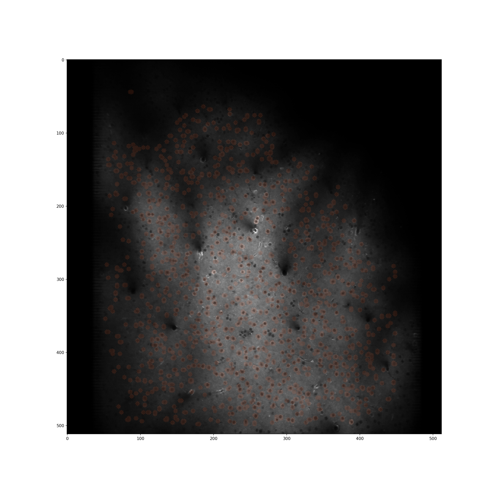

ROI Definition Methods
There are two approaches to ROI definition that can be used in the context of this toolbox and they are by and large complementary. The first is an automatic algorithm; the second is a Manual Curation GUI
Automatic Approach
The automatic approach to ROI definition is a two-step process. In the first step, putative centroids of ROIs are identified. This is done by moving a sliding window
Training an ROI classifer
A new ROI classifier can be trained (specifying all optional arguments here) by running the following command
train_roi_finder.py -rad 7 -shifts 3 7 ai93_zoom1 /path/to/folder
There are two requried arguments, which will be addressed first. The first, in this case "ai93_zoom1" is the name to be given to the roi_finder algorithm that is being trained. The second argument, "/path/to/folder" is a path to a folder containing one or more hdf5 files for which ROIs have already been defined, to be used as a training set. Importantly, multiple folders can be specified if this is appropriate:
train_roi_finder.py -rad 7 -shifts 3 7 ai93_zoom1 /path/to/folder1 /path/to/folder2
the rad argument specifies the size of the image patch that will be used to train the ROI_finder on, in pixels. Shifts specifies the size of shifts away from previously
Using a pre-trained ROI classifier
We have developed a simple algorithm for automatic roi definition. To run this algorithm, run:
run_roi_finder.py -sess -1 -ded 3 2 2 -thresh 0.96 roi_finder_name /path/to/hdf5.h5
where roi_finder name is an automatic roi finder derived from training.
Below is an example of a 1mm patch of cortex in which automatic roi segmentation has been run

Physiological Validation
A potential concern is that our automatic method relies soley on the mean image for identification. This may bias cell selection towards those that are uninteresting. We therefore validated the approach by comparing topographic organisation estimated using ROIs selected manually based on both mean image and full image stack (acquired by Manual Curation GUI) and those based purely on automatic ROI drawing. Included in the images are those ROIs which, after a simple ANOVA, are deemed significantly frequency tuned (p<0.01).

Data and and analysis run by Samuel Picard
Manual Curation
To open the GUI for manual curation of ROIs run
ROI_Drawer.py /path/to/hdf5.h5
This tool can be run with two optional arguments the first being whether to extract traces as ROIs are drawn (default is false). To enable rapid drawing run
ROI_Drawer.py -o /path/to/hdf5.h5
Secondly, and analogously, adding the -restart flag starts ROI drawing for this hdf file from the beginning, deleting previous work
which should open a dialog asking which session you wish to process:

Controls
The controls in this GUI are largely restricted to the buttons, with some important exceptions:
- You draw on ROI by moving the green circle over the desired place and double clicking
- ROIs which have been previously drawn can be selected by right clicking them
- You can zoom into and out of the image by scrolling with the mouse wheel
- The brightness histogram on the far right can (and should) be adjusted
- It is possible to zoom into and out of the trace by right clicking on the plot and moving the mouse
- You can move the image around by left clicking and dragging. This is essential when zoomed in
- If you do not press the save button, all your work will be in vain
Sharing ROIs across sessions
In many cases, multiple acquisitions run on the same day will be of the same field of view. In this case, it is desirable to share ROIs across those sessions. To do this, after drawing ROIs for one session using manual curation, run
share_roi_info.py /path/to/hdf5.h5
after drawing EACH session. Running it after drawing the ROIs for each session is crucial here as running this code block will overwrite ROIs drawn which belong to other sessions.